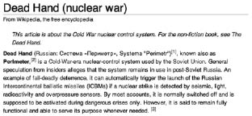
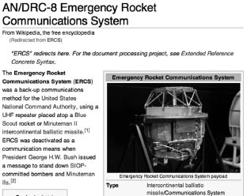

İnsanlar sahip olamayacakları bir şeyi isterlerse çatışma doğar. Çatışma, düşmanlığı, diğerini baskı altına almayı ya da yok etmeyi doğurur.
Kişi kendi varlığını korumak için gerekli her şeyi yapacaktır. İnsanın doğasında üç temel savaş nedeni var: Rekabet, güvensizlik, şan ve şeref.
Birincisi kazanç için, ikincisi güvenlik, üçüncüsü ise toplumsal statü için mücadele etmeye iter insanoğlunu.
Ben hep tüm bunları bilgisayarların da yapabildiği bir dünyayı hayal etmişimdir.
Ne paranormal güçler, yaratıklar, zombiler ne de soğukkanlı bir katil. Bir sinema filminde beni etkileyebilecek en başarılı gerilim öğesi “insanlığı yöneten bir bilgisayar sisteminin” varlığıdır.
Bugüne kadar bu durumun en istikrarlı işlendiği film Terminator serisi. Bu dört filmlik seride dikkatimi çeken şey ortada gözüken robotlardan çok tüm robotları kontrol eden Skynet bilgisayar sistemi olmuştur.
Skynet filmde “devrimsel bir yapay zekâ sistemi” olarak Cyber-
dyne Systems tarafından Amerikan ordusu için yaratılır. Amaç düşman saldırılarına karşı, insan hatası, karar verme yavaşlığı gibi engellere takılmadan hızlıca cevap verebilmektir. Bu ise kısaca robotik bir bilgisayar sistemine oldukça kritik olan bu konuda tanınan karar verme özgürlüğü olarak açıklanabilir.
Ünlü bilim kurgu yazarı Isaac Asimov’un kitaplarında yer alan, robotlarla ilgili üç kuralı hatırlayalım:
1. Bir robot insana zarar veremez ya da bir insanın zarar görmesine seyirci kalamaz.
2. Bir robot, 1. kural ile çelişmediği sürece bir insanın emirlerine uymak zorundadır.
3. Bir robot 1. ve 2. kural ile çelişmediği sürece kendisinin zarar görmesine izin veremez.
Filmdeki kontrol dışına çıkan Skynet’in, internet gibi başta askeri bir projeye hizmet ettiği düşünülürse Asimov’un nahif kurallarına bağlı olacağını düşünmek saflık olur. Bu gelişmiş yapay zekâ, bir süre çalıştıktan sonra self-awareness (farkındalık) özelliği kazanarak onu yöneten operatörleri saf dışı bırakır. Sistemi kapatmak için uğraşan insanları kendi varlığı için bir tehdit olarak görür ve Asimov’un 3. kuralını epeyi bir esneterek uygular. Yok edilmesine engel olmak için Rusya’ya karşı nükleer füzeleri ateşleyerek küresel bir savaşı başlatır. Cevap gecikmez ve Rusya’nın nükleer misillemesiyle birlikte 3 milyara yakın insan dakikalar içerisinde ölür.
Gerçek hayata göre bu film çok mu uçuk geldi? Hiç sanmıyorum;
Geçmişe baktığımızda, Soğuk Savaş döneminde SSCB’nin benzer bir sistemi olduğunu görüyoruz. Dead Hand adı verilen bu sistem Sovyet topraklarında belli bir oranın üzerinde sismik, ışık, radyoaktif, basınç hareketi olduğunda devreye giriyor. Sensörler bu tarz aktiviteleri yakaladıkları anda balistik füzeler Amerika’ya karşı ateşleniyor. Füzelerin menzili ise ortalama 5.500 kilometre. Asıl ürkütücü olan ise Soğuk Savaş döneminde yaratılan bu sistemin halen çalışıp güncellemelerinin yapılıyor oluşu.
Amerika da boş durmuyor elbette. O da ERCS adı verilen bir sistem bünyesinde sismik, radyasyon sensörleriyle tüm dünyadaki nükleer test ve patlamaları dikkatle izliyor.

Wikipedia. Dead Hand’in tanımı.

Wikipedia. ERCS’nin tanımı.
Neyse ki sistem Rusya gibi sonuçları felaket olacak şekilde bilgisayar kontrolüne verilmemiş. Onun yerine her türlü gelişme çeşitli sinyaller yardımıyla belirli askeri birimlere iletiliyor. Bu yüzdendir ki örneğin Kuzey Kore’nin yaptığı nükleer denemenin başarılı olup olmadığından Amerika’nın anında haberi olabiliyor.
Şöyle oturup düşününce bana garip gelen şeylerin sayısı çok. IBM’in bilgisayarı dünyanın en iyi satranç ustasıyla başa baş yarışıyor, Ruslar biyolojik dokularla elektronik devreleri aynı projede uyumla çalıştırarak başarıyla bir “biyobilgisayar” yarattığını söylüyor, yine IBM’in yarattığı bir bilgisayar ünlü bir bilgi yarışmasına katılıp en yüksek skoru elde ediyor. Tamam, yapay zekâ halen turing testi gibi kült sınavları geçememiş olabilir. Ama benim asıl merak ettiğim konu bugün bildiğimiz gelişmeler dışında NSA gibi çok gizli kuruluşların ellerinde ne olduğu. 1910 yılında Almanların gözükmeyen mürekkebinin sırrını çözüp bu gizli formülü 2011 yılında açıklamayı uygun gören bir ülkenin daha ne gibi sırlar taşıdığı üzerine düşünmek gerek.
İçinize biraz da olsa kurt düştüyse, her Holywood filminde olduğu gibi gerçek hayatta da hiç ummadık anda kahramanlar ortaya çıkabilir. Terminator ile Skynet’e dönecek olursak, film içerisinde en çok göze çarpan şey robotlara sürekli kurşun yağdıran insanlar. Ama esas oğlanın gerçekte silah sıkan değil, makineleri hack eden kişi olduğu ortada. Arada sırada otomatik para çekme makinelerini hack eden, el bilgisayarıyla kapı kontrol ünitelerine bağlanıp kilitli kapıları açan insanlar görmek mümkün. Son filmde dahi makineleri deaktif etmeye yarayan çok gizli bir sinyal keşfedilip kullanılarak insanları öldüren makineler hack ediliyor.
Terminator serisinin ilk filmi bilgisayar sistemlerinin hakimiyetini anlattığında yıl 1984’tü. 2012 yılına kadar kaç uzaylı istilası filmi izlediğimi düşünüyorum da... Belki de gerçek tehdidi o kadar da uzakta aramamak gerekiyor. Bilgisayarlar her geçen gün daha fazla iş için kullanılıyor, üstelik bu işlerden biri de insan öldürmek. Peki bir gün durumundan hiç şikâyet etmeyen bilgisayarlar “farkındalık” kazanırsa? Neyse ki şanslıyız. Bizi bu durumdan kurtaracak kişiler bu işleri başımıza açan planlı, steril mühendisler değil, hacker’lardır.